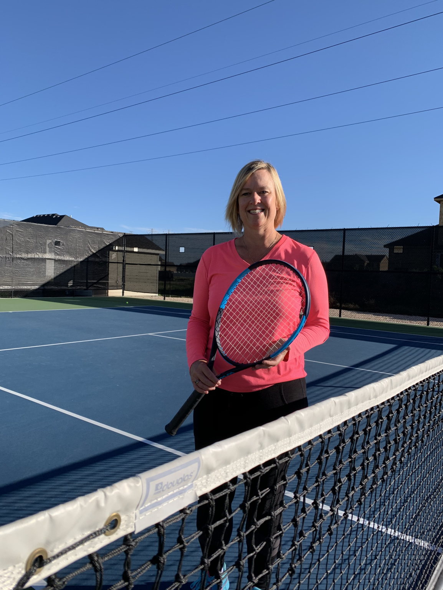
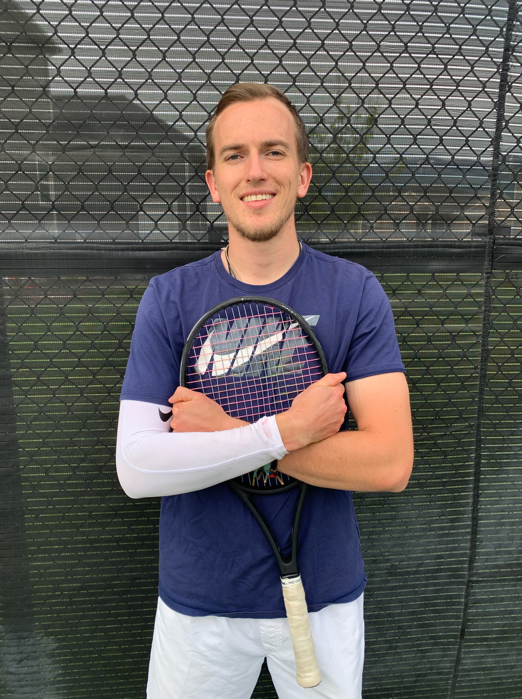
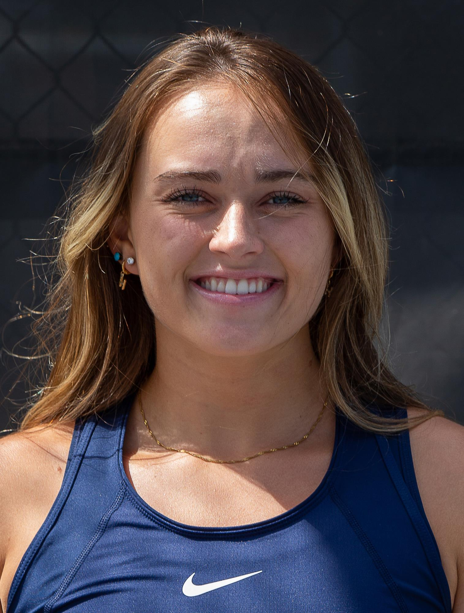

Director and Founder
Barbara has helped players make high school teams, improve in their USTA Leagues, and even has had students play at the NCAA Division 1 level. A former Arizona State University standout, Barbara was consistently playing at the highest level in college tennis, having wins over WTA professionals at that time and being an integral part of a top 10 NCAA program. Before ASU, Barbara won the state championship at #1 singles for Bonneville High School. Barbara has created and directed successful programs at private facilities sharing her passion with others and having players achieving their goals for over 25 years.
Barb’s passion is passing on the skill and joy of tennis to all levels and ages. It’s her top priority that players learn good fundamentals, technique, and strategy so they can enjoy and succeed at the game of tennis throughout their life. Barb’s pro and college tennis playing experience as well as 25+ years of professional coaching make it possible for her to provide top level coaching to all levels of players from beginning to advanced.
Professional
Parker brings over 20 years of experience playing tennis and 9 years of coaching. Parker played college tennis at Campbellsville University and Metropolitan State University of Denver. At Campbellsville University he was named 2nd team all american in the 2014-2015 season and that season won the NCCAA Championship in Mobile, Alabama.
Parker is a Coach for Rafa Nadal Academy Camps and a USPTA Certified Professional.
“Tennis has been a pathway for all things positive in my life. I love giving back to this sport and sharing it with others.”
Professional
Hannah brings many years of success to Jones Tennis Academy. Holding the record for most wins in a single season in Utah State University Womens Tennis program history she graduated as an Aggie and went on to complete her masters degree and fifth year of collegiate tennis at Gonzaga University where she primarily played 5 singles and 1 doubles. Hannah won the UHSAA state championship while playing at Bonneville High School.
